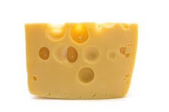

Here you can learn all about the wonders of these two amazing things.
Cats are amazing creatures. They are known for their independent nature and their ability to keep mice and other pests away, but they can also be loving animals when they want to be. Cats have been treasured by humans since time immemorial. From sleek, short-haired breeds like Siamese and Bengal cats to furry Persians and Maine Coons, there are many kinds of cats to choose from, each with its own unique qualities. Whether it is the gentle companionship or the majestic grace of these creatures that draws people to them, there is no doubt that cats evoke an undeniable love in those who care for them. In addition to being low-maintenance and endlessly entertaining, cats can also be trained to do tricks and use the litter box with relative ease. Ultimately, their endearing personalities make cats one of the most beloved pets in households all over the world. Cats have long been one of the most popular household pets and their appeal lies in their versatility and independence. Not only do cats make wonderful companion animals, but they can also help people with mental and physical health problems by providing a calming presence. There are many different kinds of cats, ranging from long-haired Maine Coons to short-haired Tabbies and even exotic Siamese cats. No matter the breed or size, cats have a way of captivating our hearts. Whether it's with their curiosity, playfulness, or cuddly purrs, cats bring joy into any home. The love that people have for cats has even spawned numerous popular cat breeds over the years. Popular breeds like Persians, Bengal Cats, and Sphynx Cats are highly sought after due to their unique looks and personalities. These exotic breeds have created an ever-growing fanbase for felines all over the world. The loyalty and affection that people feel towards cats is clear - no matter what breed they are. Cats will forever be a part of our lives; they are our furry friends who never cease to bring us joy and comfort no matter the circumstances. They show us that sometimes all we need is love, understanding, and patience in order to lead happy lives. For these reasons and so many more, cats continue to be an integral part of families across the globe. Many people keep cats as pets because they are low maintenance and make great companions.
Cheese is a delicious and versatile food. It is made from the milk of various animals, such as cows, goats, and sheep. There are hundreds of different types of cheese, each with its own unique flavor and texture. Cheese is commonly used in cooking, and can be enjoyed on its own as well.
Score: 0